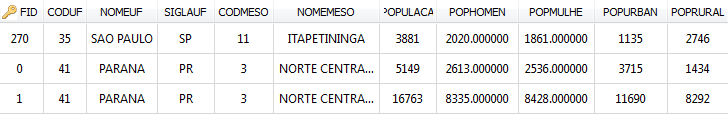
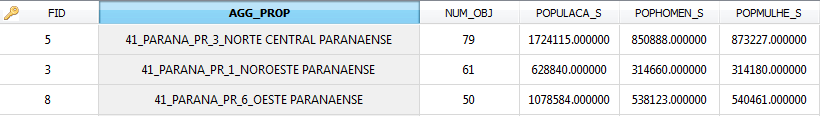
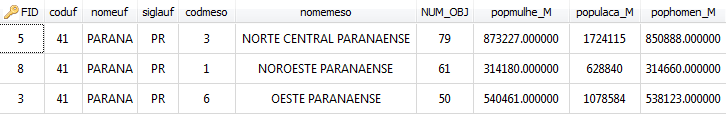

This operation aggregates objects of a layer based on specified attributes. Objects with the same value for the specified attributes will be part of the same group.
The output is a new layer that contains an object for each group identified in the input layer.
The geometry of each group is the result of the spatial UNION of all objects geometry aggregated to that group.
The attributes of each group are composed
at least by all attributes used to aggregate, an ID, and a new
one called NUM_OBJ to register the number of objects used
to generate the group. Besides that,
some attributes can be chosen to be summarized using the following
statistical
parameter:
It is accessed through:
Processing > Vector Processing
> Aggregation...
- Select the Input layer to apply the aggregation.
- Select one or more attributes that will be used to aggregate objects with the same value.
- Optionally use Filter with part of the attribute name to filter the attributes displayed.
- Optionally, check the option Only selected if you wish to process only the objects that are selected in the map display.
- Optionally, check the option Calculate Statistics if you wish to calculate some statistical summarization over other attributes not used in the aggregation.
- For each attribute select the statistical summarization wished (Mean, Sum, Max, Min, ...)
- Inform the Output Repository by clicking on:
 to
select the output
directory and also inform the new layer name to store the result, or
to
select the output
directory and also inform the new layer name to store the result, or to select the Data Source.
to select the Data Source.- Inform the new Layer Name to store the aggregation result, if the repository is a data source.
- Click OK to perform the operation or Cancel to close the interface.
The Aggregation result can be stored in different TerraLib data sources. Check data source selector for more details on how to select a data source.
The request for summarization statistics generates attributes for the groups. Its names are the input attribute name combined with the statistic parameter name used. For example, suppose that the input data has an attribute called population that will be summarized by the parameter sum. In this case the attribute of the group will be called population_SUM.
The output data source is also responsible for validating the attribute names in each group. If they are not acceptable they might be modified. For example, in DBFs (part of Esri Shapefiles) attribute names can not be more than 10 characters long, then in the example above the attribute name would be populac_S instead of population_SUM.
The attributes used to perform the aggregation can generate only one attribute column called AGG_PROP or as much as the attributes involved, depending on the input layer source.
As an example suppose the aggregation applied in a shape file using the following attributes: CODUF, NOMEUF, SIGLAUF, CODMESO, NOMEMESO, and using the statistical parameter SUM over POPULACA, POPHOMEN, POPMULHE. The input data is showed bellow:

The resulting table associated with the aggregation is:

Note that the AGG_PROP attribute is a concatenation of the values separated by "_" , the NUM_OBJ contains the number of objects aggregated, and the name of summarized attributes (POPULA_S) changed a bit because of the way OGR treat names greater than 10 characters.
If the aggregation above is applied in a PostGIS layer the resulting table is:

Note that beside NUM_OBJ, exists an attribute for each one used to aggregate (5) and an attribute for each one used to summarize data (3).